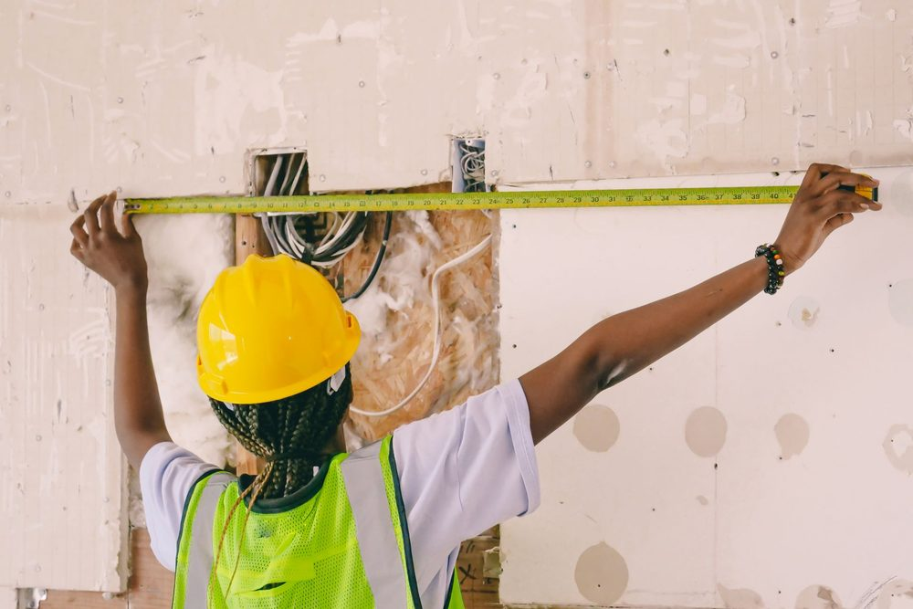
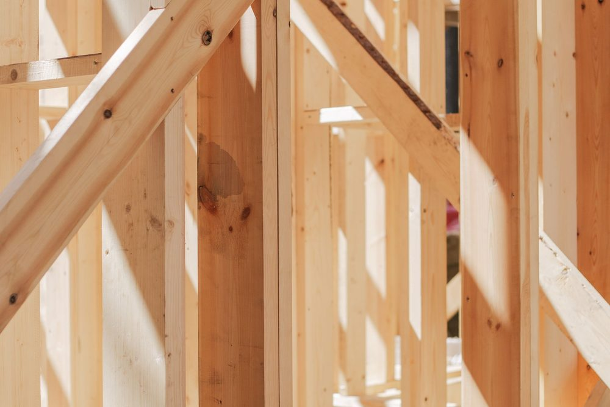

Surélever une maison : une question de structure avant d'être une question d'espace
Surélever une maison consiste à ajouter un niveau habitable au-dessus d'une construction existante, sans agrandir son emprise au sol. La solution séduit sur un terrain contraint, en zone urbaine dense ou lorsque le foncier disponible autour de la maison ne permet pas d'envisager une extension classique de plain-pied.
La question qui se pose en premier n'est pourtant pas architecturale mais structurelle. Une maison a été conçue et construite pour porter un toit et, éventuellement, un étage donné. Ajouter un niveau supplémentaire revient à demander à des fondations et à des murs existants de reprendre une charge qu'ils n'ont jamais eu à supporter. Avant de dessiner quoi que ce soit, il faut donc établir ce que la structure en place permet réellement.
MH Structure n'intervient pas sur les travaux de surélévation eux-mêmes. Notre rôle est le diagnostic de la structure existante et le dimensionnement de la solution retenue (notes de calcul, plans de coffrage et d'armatures). La réalisation des travaux relève d'entreprises de gros oeuvre, de charpente ou d'ossature bois selon la solution choisie.
Les questions à se poser avant tout projet de surélévation
Avant même d'esquisser un plan, quelques questions permettent d'orienter la réflexion et d'éviter un projet dessiné puis redimensionné après coup :
- Quelle est la nature des fondations existantes et à quelle profondeur sont-elles ancrées ? Une maison ancienne sur fondations superficielles peu profondes n'a pas la même marge qu'une construction récente dimensionnée selon l'Eurocode 2.
- Les murs porteurs actuels sont-ils en bon état, sans fissuration ni désordre existant qui traduirait déjà une charge proche de leur limite ?
- Quel poids le niveau ajouté représente-t-il réellement, une fois le mode constructif choisi, et non pas seulement estimé sur plan ?
- Le projet reste-t-il dans l'emprise et le gabarit autorisés par le règlement d'urbanisme de la commune, indépendamment de la faisabilité structurelle ?
Ces quatre questions déterminent, souvent avant même les premiers coups de crayon, si un projet de surélévation est réaliste, réalisable sous conditions, ou s'il impose une reprise préalable de la structure.
La capacité des fondations existantes
Les fondations d'une maison sont dimensionnées pour reprendre un poids donné, réparti entre les murs, les planchers et la toiture, avec une marge de sécurité intégrée au calcul d'origine. Cette marge n'est presque jamais documentée pour le maître d'ouvrage : elle dépend de la descente de charges réelle du bâtiment et de la contrainte admissible du sol au moment de la construction.
Ajouter un niveau revient à augmenter cette descente de charges jusqu'aux fondations. Trois issues sont possibles une fois le calcul refait : la marge existante absorbe le poids ajouté sans intervention sur les fondations, elle l'absorbe partiellement et impose de limiter le poids du projet, ou elle est insuffisante et un renforcement de fondation devient nécessaire avant de construire en hauteur. Ce renforcement, par reprise en sous-oeuvre ou par élargissement des semelles, reste techniquement possible mais alourdit sensiblement le budget et le planning du projet.
Lorsque les plans d'origine ne sont pas disponibles, ou pour un bâtiment ancien dont les fondations n'ont jamais été formellement caractérisées, un rapport géotechnique actualisé et un relevé de l'existant restent le point de départ le plus fiable pour ce calcul.

L'état des murs et poteaux porteurs
Les fondations ne sont pas le seul point de vigilance : les murs porteurs et, dans une construction à ossature poteaux-poutres, les poteaux existants doivent eux aussi être capables de transmettre la charge supplémentaire jusqu'au sol. Leur section, leur matériau (maçonnerie, béton armé, bois) et leur état conditionnent directement cette capacité.
Un mur déjà fissuré, un poteau présentant une corrosion des armatures apparentes ou un mur en maçonnerie ancienne à faible résistance mécanique imposent une vérification approfondie avant tout projet. Dans certains cas, un renforcement localisé, par exemple un chemisage de poteau ou un doublement ponctuel de mur, permet de restaurer une capacité suffisante sans reprendre l'ensemble de la structure.
Il est également fréquent qu'une surélévation impose de créer de nouveaux points d'appui, notamment lorsque le mode constructif retenu au niveau ajouté ne coïncide pas exactement avec la trame des murs porteurs existants en dessous. Ce report de charges doit alors être vérifié appui par appui, et non de façon globale.
Un mur fissuré n'exclut pas automatiquement une surélévation. Il impose un diagnostic préalable pour distinguer une fissure de simple retrait, sans conséquence structurelle, d'un désordre traduisant une insuffisance de capacité porteuse à traiter avant d'ajouter du poids.
Le poids réellement ajouté : au-delà de l'intuition
Le poids d'un niveau ajouté varie fortement selon le mode constructif retenu, bien plus que ne le suggère l'intuition. Un même projet, dessiné à l'identique, peut représenter un poids au mètre carré très différent selon qu'il est construit en maçonnerie traditionnelle, en ossature bois ou en structure métallique légère. Le tableau suivant donne des ordres de grandeur, à affiner ensuite dans la descente de charges propre à chaque projet.
| Mode constructif du niveau ajouté | Poids approximatif | Incidence sur la structure existante |
|---|---|---|
| Maçonnerie traditionnelle (parpaing, enduit, dalle béton) | 250 à 350 kg/m² | Marge de fondation souvent insuffisante sans renforcement |
| Structure béton armé complète | 350 à 450 kg/m² | Reprise de fondations quasi systématique |
| Ossature bois, bardage léger | 80 à 130 kg/m² | Solution la plus fréquemment compatible sans renforcement lourd |
| Structure métallique légère, bardage composite | 60 à 110 kg/m² | Comparable à l'ossature bois, utile sur grandes portées |
Ces valeurs restent des ordres de grandeur : elles ne dispensent jamais du calcul précis de la descente de charges du projet, qui intègre aussi les charges d'exploitation, la toiture, les cloisons et les revêtements retenus.
Les solutions d'allègement : ossature bois et structure métallique légère
Lorsque la structure existante ne dispose que d'une marge limitée, alléger le niveau ajouté permet souvent de rendre un projet réalisable sans toucher aux fondations. Deux familles de solutions reviennent le plus fréquemment :
- L'ossature bois combine une structure porteuse légère et une bonne rigidité, avec des solutions d'isolation intégrées à l'épaisseur des parois. C'est la solution la plus utilisée pour les surélévations résidentielles, notamment parce qu'elle limite le poids transmis aux appuis existants.
- La structure métallique légère, associée à un bardage composite ou à des panneaux sandwich, permet de franchir de plus grandes portées avec un nombre réduit de points d'appui, ce qui peut faciliter le report de charges vers les murs porteurs existants les mieux placés.
Le choix entre ces deux solutions, ou une combinaison des deux selon les zones du projet, dépend de la marge réellement disponible sur la structure existante, de la portée à franchir et des contraintes architecturales. Il se décide après le calcul de la descente de charges, jamais avant.

Le diagnostic préalable et les démarches d'urbanisme
Le diagnostic structurel préalable rassemble l'ensemble des vérifications précédentes : relevé de l'existant, analyse des fondations et des murs porteurs, calcul de la marge disponible et comparaison avec le poids du mode constructif envisagé. C'est ce diagnostic qui permet de dire, avant tout dépôt de dossier, si le projet est réalisable en l'état, réalisable sous condition d'allègement, ou s'il nécessite une reprise préalable de fondations ou de murs.
Sur le plan administratif, une surélévation reste soumise au règlement d'urbanisme de la commune (hauteur maximale, emprise, aspect extérieur) et, selon la surface créée après travaux, peut rendre obligatoire le recours à un architecte pour le dépôt du permis de construire. Ces démarches d'urbanisme relèvent de l'architecte ou du maître d'oeuvre du projet : MH Structure y contribue en fournissant les pièces justificatives structurelles nécessaires, notamment la note de calcul et, en zone sismique, l'attestation parasismique associée au projet, sans se substituer au dépôt et à l'instruction du dossier.
Un projet de surélévation en tête ? Nous établissons le diagnostic de votre structure existante, la marge disponible sur vos fondations et vos murs porteurs, puis le dimensionnement de la solution retenue. Devis gratuit sous 48h.
Questions fréquentes
Toutes les maisons peuvent-elles être surélevées ?
Non. La capacité à surélever dépend directement de la structure existante : nature et dimensionnement des fondations, état et section des murs ou poteaux porteurs, marge disponible entre les charges déjà supportées et les charges admissibles. Une maison ancienne aux fondations peu profondes ou un mur déjà fissuré peuvent limiter fortement le projet, voire l'exclure sans reprise préalable de la structure.
Comment savoir si mes fondations supportent une surélévation ?
Cela suppose de connaître la contrainte admissible du sol sous les fondations existantes, leur profondeur d'ancrage et les charges qu'elles reprennent déjà, puis de vérifier que la marge restante absorbe le poids du niveau ajouté. Cette vérification s'appuie sur les plans d'origine si disponibles, sur un relevé de l'existant et, selon les cas, sur les données d'un rapport géotechnique. Un renforcement de fondation reste possible lorsque la marge est insuffisante, mais il alourdit le projet.
L'ossature bois est-elle toujours la solution la plus légère pour surélever ?
L'ossature bois figure parmi les solutions les plus légères au mètre carré, avec la structure métallique légère associée à un bardage composite. Le choix final dépend cependant aussi de la portée à franchir, du nombre de points d'appui disponibles sur la structure existante et des contraintes architecturales. Une comparaison chiffrée entre plusieurs solutions, à partir de la descente de charges réelle du projet, reste nécessaire avant de trancher.
Un diagnostic structurel est-il obligatoire avant une surélévation ?
Il n'existe pas d'obligation réglementaire générale imposant un diagnostic structurel avant toute surélévation. En pratique, il est fortement recommandé, car c'est lui qui détermine si le projet est réalisable en l'état, avec quelles limites de poids et avec quelles éventuelles reprises de fondations ou de murs. L'assurance décennale du projet et, selon la surface créée, le recours à un architecte peuvent par ailleurs rendre certaines pièces justificatives indispensables au dépôt du permis.